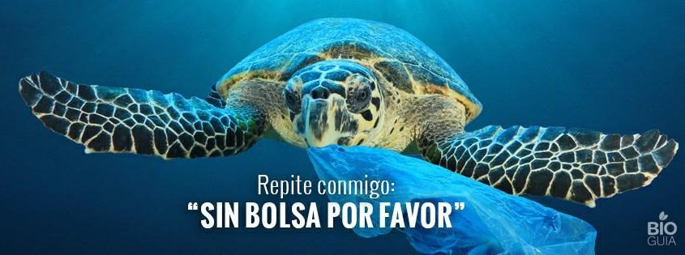

Antes De Que Sea Tarde
Sabías que una botella de plástico demora en degradarse unos 500 años si se encuentra en el mar? Y que si la misma botella esta enterrada puede incluso demorar en descomponerse unos 1000 años? La ONU ya ha advertido en un comunicado que si todo sigue igual y no tomamos consciencia, para el 2050 en el océano abra más toneladas de plástico que de peces. Es muy triste ver como nuestros océanos cada vez se parecen más a basureros, albergando en la actualidad hasta 20 millones de toneladas de plásticos!! Lo peor es que cuando comienza a degradarse por la erosión, esos pequeños trozos en los que se transforma una “insignificante botella de plástico” terminará en el estomago de algún cetáceo, tortuga, gaviota, o cualquier otra especie marina y que en muchas ocasiones le terminará ocasionado la muerte.

Por eso, te pido que comencemos a cambiar la mentalidad. Al menos yo no quiero vivir en un mar de plástico y seguro que tu tampoco. Sabías que una botella de plástico demora en degradarse unos 500 años si se encuentra en el mar? Y que si la misma botella esta enterrada puede incluso demorar en descomponerse unos 1000 años? La ONU ya ha advertido en un comunicado que si todo sigue igual y no tomamos consciencia, para el 2050 en el océano abra más toneladas de plástico que de peces. Es muy triste ver como nuestros océanos cada vez se parecen más a basureros, albergando en la actualidad hasta 20 millones de toneladas de plásticos!! Lo peor es que cuando comienza a degradarse por la erosión, esos pequeños trozos en los que se transforma una “insignificante botella de plástico” terminará en el estomago de algún cetáceo, tortuga, gaviota, o cualquier otra especie marina y que en muchas ocasiones le terminará matando.
Por eso, te pido que comencemos a cambiar la mentalidad. Al menos yo no quiero vivir en un mar de plástico y seguro que tú tampoco. Y que podemos hacer? Un gesto tan sencillo como ir al supermercado y decir “Sin bolsa por favor, traigo la mia de casa”. Recicla, no dejes en la playa abandonados residuos, sobre todo los que no son biodegradables, usa bolsas de tela reutilizables. Rechaza los alimentos que tienen capas y capas de plástico. Cómpralos en su piel o cáscara. Evita comprarlos ya cortados. Gestos tan simples pueden hacer la diferencia. De lo contrario… el planeta tiene fecha de caducidad y siento decirte que antes de lo que piensas. Si te ha gustado el post y quieres que se tome consciencia… compártelo por favor y deja tu comentario si tienes más ideas de como se podría ayudar.